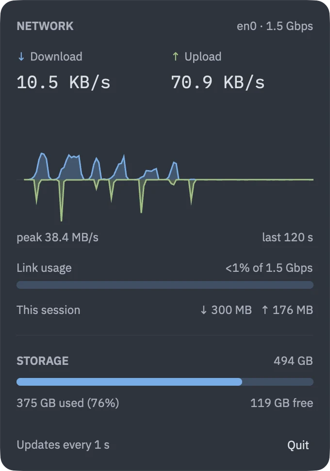

Straight from the kernel
Rates come from sysctl(NET_RT_IFLIST2): 64-bit byte counters that don't wrap on a busy day.
Netwatch is a small, open-source menu-bar monitor for macOS. Live download and upload rates, a scrolling traffic graph and your free disk space, always one glance away.

Rates, a 30-sample graph and a storage bar, redrawn every tick in a few pixels of menu bar.
Rust from the counters to the pixels. No Dock icon, no helper, no background service.
64-bit counters straight from the kernel, physical ports only, so VPN traffic isn't counted twice.
Left-click the status item and a dashboard drops down beneath it. Click away and it's gone.
Download and upload in large type, over a mirrored graph of the last 120 seconds with its peak.
The interface you're on, its link speed, and how much of it the busier direction is using right now.
Everything received and sent since Netwatch started.
Used and free space on your startup disk, measured the way Finder measures it, purgeable space included.
Zed's One Dark and One Light themes, switching with macOS.
Netwatch reads the same counters as the kernel's own tools, and is explicit about what they mean.
Rates come from sysctl(NET_RT_IFLIST2): 64-bit byte counters that don't wrap on a busy day.
Only enN interfaces are counted. VPN tunnels already cross them, so nothing is counted twice.
Ethernet shows the negotiated speed. Wi-Fi shows the current PHY rate, which moves with signal quality.
Sample every 0.5, 1, 2 or 5 seconds. The choice is saved with your other settings.
A menu-bar-only app: no Dock icon, no window in the app switcher, nothing to dismiss.
No account, no analytics, no network calls of its own. It only watches.
Netwatch is MIT licensed and built in the open, on the same stack as
Guidy: Rust, GPUI, tray-icon and resvg.
There are no signed builds yet. Build it from source with a recent Rust toolchain and drop the app into Applications.
$ git clone https://github.com/imran-vz/Netwatch && cd Netwatch $ cargo install cargo-packager --locked $ cargo packager --release -p netwatch-app --formats app $ cp -R target/packages/Netwatch.app /Applications/